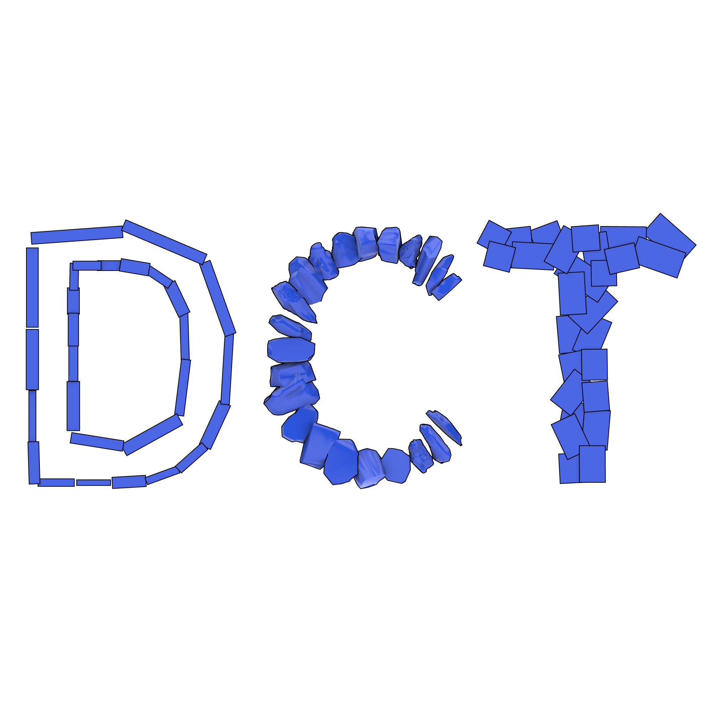

DigitalCircularityToolkit

DigitalCircularityToolkit (DCT) is a Grasshopper plugin for inventory-driven design: designing with what already exists, such as reclaimed timber, salvaged steel, offcut plates or scanned stones. It takes arbitrary geometry (curves, Breps, meshes, point clouds), abstracts each piece as a line, plane, box or sphere, describes it with numbers, and finds the best assignment of the available pieces to the parts of a design.
The workflow in five steps
Every DCT definition follows the same chain. Each step has a concept page and a set of components:
- Objects: turn demand geometry (the design) and supply geometry (the inventory) into design objects. DCT finds each object's principal axes with PCA, measures it in that frame and abstracts it as a line, plane, box or sphere. See Design objects and Orientation.
- Sets: expand objects by their quantity into one entry per physical piece. See Inventories.
- Feature vectors: describe every piece by the numbers that matter for the match: effective length, width, cross-section area, a shape descriptor. See Feature vectors and cost matrices and Shape descriptors.
- Cost matrix: compute the cost of using each supply piece for each demand part.
- Match: solve the assignment problem for the lowest total cost, then draw the assignment and move the matched pieces into place. See Matching.
The Workflows section walks through complete definitions, each with a downloadable .gh file. Every component is documented in the Component reference.
Installation
DCT runs in Rhino 8 (Windows and Mac). Download the latest release from the GitHub releases page or Food4Rhino. Step-by-step instructions are in Getting started.
Citing
When using or extending DCT for research, please cite it:
@software{lee_2024_10724610,
author = {Lee, Keith Janghyun},
title = {DigitalCircularityToolkit},
month = feb,
year = 2024,
publisher = {Zenodo},
version = {v0.5.1},
doi = {10.5281/zenodo.10724610},
url = {https://doi.org/10.5281/zenodo.10724610}
}Citations in other styles are available on Zenodo. DCT provides a generalized approach to the Digital Circularity workflow outlined by Cousin et al.
About
DCT is developed by Keith J. Lee (MIT Building Technology, Digital Structures). Karl-Johan Soerensen developed I/O workflows with Google Sheets and CSV files. DCT was first used in the MIT design workshops 4.181 Digital Circularity: Tooling up for reuse with Odds & Mods (IAP 2024) and 4.185 ODDS & MODS Castaways (Spring 2024). Source code and issues: github.com/keithjlee/DigitalCircularityToolkit.